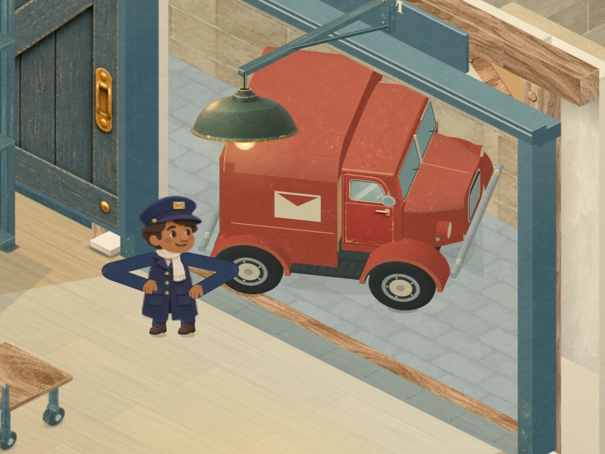
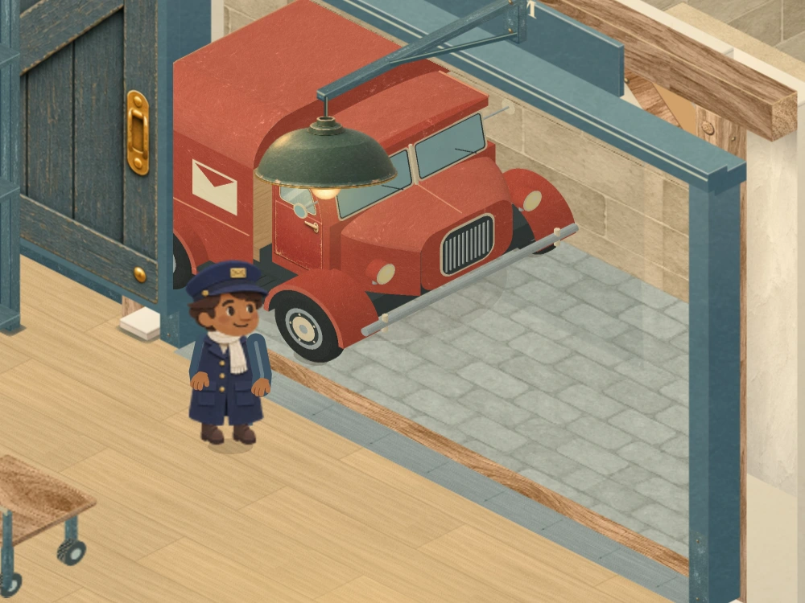
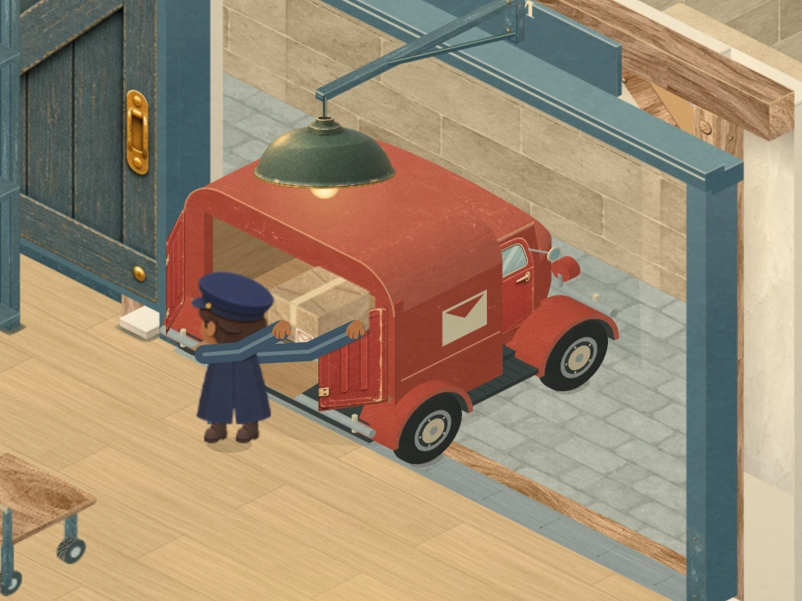
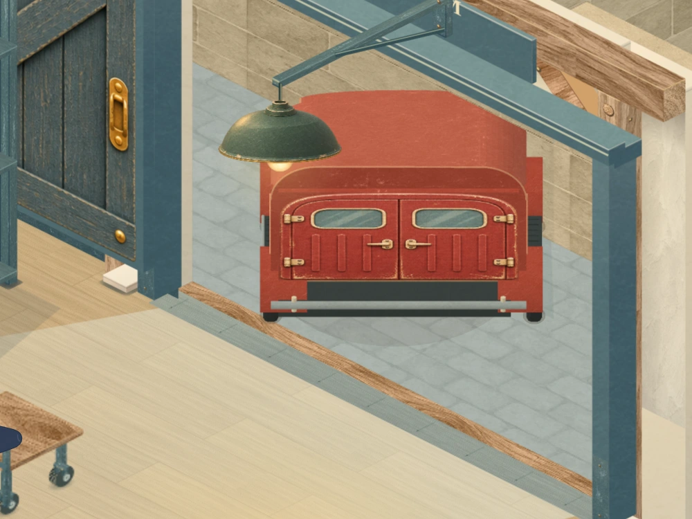
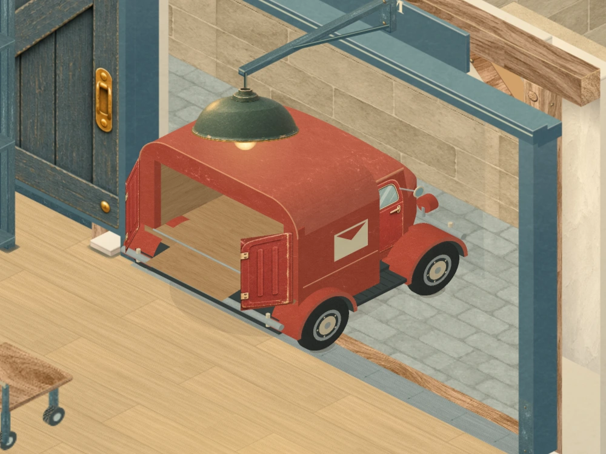

CATS BY POST · MORNING DISPATCH · VAN & LOADING BAY
A working paper van
Rounded bodywork, real wheel openings, layered tyres, recessed glass and fitted postal details now share the room’s material finish. These are actual renderer captures, including arrival, loading and departure.
The van’s route and clock are unchanged. Its loading floor, cargo, rear opening, door leaves and ramp retain their native coordinates. Normal play framing, all fifteen deliveries and chapter presentations are preserved.
From blockwork to bodywork

Corrected bodywork at frame 132: curved bonnet and arches, fitted cab door, layered wheels and paper surfaces. The camera and native position match the previous checkpoint.
Arrival, contact and departure

The approach: separate window frames surround recessed glass; grille, lamps and mirror housings have depth.
Loading contact: the original floor, parcel and hand anchors meet the rebuilt body. Door leaves and the ramp keep their exact native vertices.
Departure: the same body turns away with closed doors. Actual depth determines which surface is visible. A flush metal receiving plate and fitted jamb protection finish the bay without raising the floor or narrowing its aperture.
A flush metal receiving plate and fitted jamb protection finish the bay without raising the floor or narrowing its aperture.The whole room stays readable
 Maximum delivery 7-15, normal play camera. The board retains its previous size and centre.
Maximum delivery 7-15, normal play camera. The board retains its previous size and centre.
The postal loop, close up
Step through sampled native frames. The playable study runs the continuous loop at its original timing.

Frame 600 · unloading and sorting.
Chapters and smaller screens
 The first growth retains the worker, truck and reveal timing.
The first growth retains the worker, truck and reveal timing. The second growth stays in the same room and court.
The second growth stays in the same room and court. The final expansion prepares the maximum board.
The final expansion prepares the maximum board. The final chapter retains the completed board and sends the outgoing post once.
The final chapter retains the completed board and sends the outgoing post once. Portrait phone: all 63 cells remain visible and pickable.
Portrait phone: all 63 cells remain visible and pickable. Landscape phone: running and result preserve the reserved board space.
Landscape phone: running and result preserve the reserved board space.